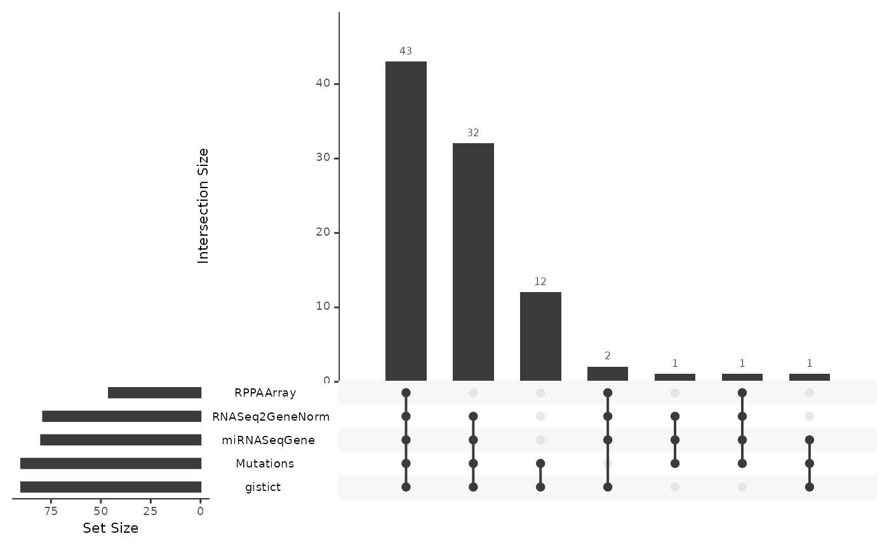

MultiAssayExperiment: Integrative workflow for public multi-omics data
Marcel Ramos
Roswell Park Comprehensive Cancer Center, Buffalo, NYLudwig Geistlinger
CUNY School of Public Health, New York, NYLevi Waldron
CUNY School of Public Health, New York, NYJuly 27, 2020
Source:vignettes/Ramos_MultiAssayExperiment.Rmd
Ramos_MultiAssayExperiment.RmdMulti-omic Integration and Analysis of cBioPortal and TCGA data with MultiAssayExperiment
Workshop participation
- See the instruction Google slides
- Go to the conference instance registration webpage and use these credentials:
- username:
rstudio - password:
welcome-to-bioc2020
- username:
- Browse to the workshop website
- (Alternatively) Docker users can run this workshop locally via:
docker run -e PASSWORD=bioc -p 8787:8787 mr148/multiassayworkshop:latestRequirements: R/Bioconductor packages
The workshop uses a Docker container with Bioconductor devel version 3.12. If you would like to install Bioconductor on your computer at a later date, see the Bioconductor installation instructions.
Here is a list of packages that we will be using:
library(MultiAssayExperiment) library(curatedTCGAData) library(cBioPortalData) library(TCGAutils) library(GenomicDataCommons) library(UpSetR)
Citing MultiAssayExperiment
Please use this citation (Ramos et al. 2017) when using MultiAssayExperiment, your citations are appreciated!
Key Packages
MultiAssayExperiment
- provides an integrative representation for multi-omics data
- modelled after the
SummarizedExperimentrepresentation for expression data - easy-to-use operations for manipulating multiple sets of data such as copy number alterations, mutations, proteomics, methylation, and more

MultiAssayExperiment object schematic
cBioPortalData
- R/Bioconductor interface to cBioPortal data
- makes use of the revamped API with caching
- queries are handled for the user in the background
- easy-to-use interface (no knowledge of the cBioPortal data model required)
curatedTCGAData
- Many tools exist for accessing and downloading The Cancer Genome Atlas data:
RTCGAToolbox,GenomicDataCommons,TCGAbiolinks,cBioPortalwebsite, Broad GDAC Firehose, and more - makes it easy to obtain user-friendly and integrative data at very little cognitive overhead
- conveniently places data in the analysis platform of choice, R/Bioconductor
- provides 33 different cancer types from the Broad GDAC Firehose
- On-the-fly construction from ‘flat’ files
-
hg19data -
MultiAssayExperimentrepresentations
Available Studies– (curatedTCGAData section) A list of available cancer studies fromTCGAutils::diseaseCodes.OmicsTypes– A descriptive table of ’omics types incuratedTCGAData(thanks to Ludwig G.@lgeistlinger)
TCGAutils
- allows additional exploration, and manipulation of samples and metadata
- User-friendly operations for subsetting, separating, converting, and reshaping of sample and feature TCGA data
- developed specifically for TCGA data and
curatedTCGADataoutputs
It provides convenience / helper functions in three major areas:
- conversion / summarization of row annotations to genomic ranges
- identification and separation of samples
- translation and interpretation of TCGA identifiers
For the cheatsheet reference table, see the TCGAutils Cheatsheet.
To better understand how it all fits together, this schematic shows the relationship among all as part of the curatedTCGAData pipeline.
Schematic of curatedTCGAData Pipeline
Data Classes
This section summarizes three fundamental data classes for the representation of multi-omics experiments.
(Ranged)SummarizedExperiment

A matrix-like container where rows represent features of interest and columns represent samples. The objects contain one or more assays, each represented by a matrix-like object of numeric or other mode.
- matrix-like representation of experimental data including RNA sequencing and microarray experiments.
- stores multiple experimental data matrices of identical dimensions, with associated metadata on:
- the rows/genes/transcripts/other measurements (
rowData) - column/sample phenotype or clinical data (
colData) - overall experiment (
metadata).
- the rows/genes/transcripts/other measurements (
-
RangedSummarizedExperimentassociates aGRangesorGRangesListvector with the rows
Note. Many other classes for experimental data are actually derived from SummarizedExperiment (e.g., SingleCellExperiment for single-cell RNA sequencing experiments)
library(SingleCellExperiment) extends("SingleCellExperiment")
## [1] "SingleCellExperiment" "RangedSummarizedExperiment"
## [3] "SummarizedExperiment" "RectangularData"
## [5] "Vector" "Annotated"
## [7] "vector_OR_Vector"
RaggedExperiment
- flexible representation for segmented copy number, somatic mutations such as represented in
.vcffiles, and other ragged array schema for genomic location data. - similar to the
GRangesListclass inGenomicRanges - used to represent differing genomic ranges on each of a set of samples
showClass("RaggedExperiment")
## Class "RaggedExperiment" [package "RaggedExperiment"]
##
## Slots:
##
## Name: assays rowidx colidx metadata
## Class: GRangesList integer integer list
##
## Extends: "Annotated"RaggedExperiment provides a flexible set of _*Assay_ methods to support transformation of data to matrix format.

RaggedExperiment object schematic. Rows and columns represent genomic ranges and samples, respectively. Assay operations can be performed with (from left to right) compactAssay, qreduceAssay, and sparseAssay.
The Integrative Container
MultiAssayExperiment object schematic. colData provides data about the patients, cell lines, or other biological units, with one row per unit and one column per variable. The experiments are a list of assay datasets of arbitrary class. The sampleMap relates each column (observation) in ExperimentList to exactly one row (biological unit) in colData; however, one row of colData may map to zero, one, or more columns per assay, allowing for missing and replicate assays. sampleMap allows for per-assay sample naming conventions. Metadata can be used to store information in arbitrary format about the MultiAssayExperiment. Green stripes indicate a mapping of one subject to multiple observations across experiments.
MultiAssayExperiment
- coordinates multi-omics experiment data on a set of biological specimens
- can contain any number of assays with different representations and dimensions
- assays can be ID-based, where measurements are indexed identifiers of genes, microRNA, proteins, microbes, etc.
- assays may be range-based, where measurements correspond to genomic ranges that can be represented as
GRangesobjects, such as gene expression or copy number.
Click on the fold to see what data classes are supported!
-
matrix: the most basic class for ID-based datasets, could be used for example for gene expression summarized per-gene, microRNA, metabolomics, or microbiome data. -
SummarizedExperimentand derived methods: described above, could be used for miRNA, gene expression, proteomics, or any matrix-like data where measurements are represented by IDs. -
RangedSummarizedExperiment: described above, could be used for gene expression, methylation, or other data types referring to genomic positions. -
ExpressionSet: Another rich representation for ID-based datasets, supported only for legacy reasons -
RaggedExperiment: described above, for non-rectangular (ragged) ranged-based datasets such as segmented copy number, where segmentation of copy number alterations occurs and different genomic locations in each sample. -
RangedVcfStack: For VCF archives broken up by chromosome (seeVcfStackclass defined in theGenomicFilespackage) -
DelayedMatrix: An on-disk representation of matrix-like objects for large datasets. It reduces memory usage and optimizes performance with delayed operations. This class is part of theDelayedArraypackage.
Note. many data classes that support row and column naming and subsetting can be used in a MultiAssayExperiment.
MatchedAssayExperiment
- uniform subclass of
MultiAssayExperiment - “all patients have a sample in each assay”
# coercion as(x, "MatchedAssayExperiment") # construction from MAE MatchedAssayExperiment(mae)
Note. The MultiAssayExperiment package then provides functionality to merge replicate profiles for a single patient (mergeReplicates()).
Key points
-
MultiAssayExperimentcoordinates different Bioconductor classes into one unified object -
MultiAssayExperimentis an infrastructure package whilecuratedTCGADataandcBioPortalDataprovide data on cancer studies including TCGA
Building from Scratch: MultiAssayExperiment
miniACC Demo
Get started by trying out MultiAssayExperiment using a subset of the TCGA adrenocortical carcinoma (ACC) dataset provided with the package. This dataset provides five assays on 92 patients, although all five assays were not performed for every patient:
- RNASeq2GeneNorm: gene mRNA abundance by RNA-seq
- gistict: GISTIC genomic copy number by gene
- RPPAArray: protein abundance by Reverse Phase Protein Array
- Mutations: non-silent somatic mutations by gene
- miRNASeqGene: microRNA abundance by microRNA-seq.
data("miniACC") miniACC
## A MultiAssayExperiment object of 5 listed
## experiments with user-defined names and respective classes.
## Containing an ExperimentList class object of length 5:
## [1] RNASeq2GeneNorm: SummarizedExperiment with 198 rows and 79 columns
## [2] gistict: SummarizedExperiment with 198 rows and 90 columns
## [3] RPPAArray: SummarizedExperiment with 33 rows and 46 columns
## [4] Mutations: matrix with 97 rows and 90 columns
## [5] miRNASeqGene: SummarizedExperiment with 471 rows and 80 columns
## Functionality:
## experiments() - obtain the ExperimentList instance
## colData() - the primary/phenotype DataFrame
## sampleMap() - the sample coordination DataFrame
## `$`, `[`, `[[` - extract colData columns, subset, or experiment
## *Format() - convert into a long or wide DataFrame
## assays() - convert ExperimentList to a SimpleList of matrices
## exportClass() - save all data to files
shiny Demo
Click Here to open the shiny tutorial.
Key points
- Extractor functions allow users to take components from the
MultiAssayExperimentobject - They’re usually the same name as the component except for
experimentswhich extracts theExperimentList
Notes on Working with MultiAssayExperiment
API cheat sheet
The MultiAssayExperiment API for construction, access, subsetting, management, and reshaping to formats for application of R/Bioconductor graphics and analysis packages.
MultiAssayExperiment construction and concatenation
constructor function
The MultiAssayExperiment constructor function can take three arguments:
-
experiments- AnExperimentListorlistof rectangular data -
colData- ADataFramedescribing the patients (or cell lines, or other biological units) -
sampleMap- ADataFrameofassay,primary, andcolnameidentifiers
The miniACC object can be reconstructed as follows:
MultiAssayExperiment( experiments = experiments(miniACC), colData = colData(miniACC), sampleMap = sampleMap(miniACC), metadata = metadata(miniACC) )
## A MultiAssayExperiment object of 5 listed
## experiments with user-defined names and respective classes.
## Containing an ExperimentList class object of length 5:
## [1] RNASeq2GeneNorm: SummarizedExperiment with 198 rows and 79 columns
## [2] gistict: SummarizedExperiment with 198 rows and 90 columns
## [3] RPPAArray: SummarizedExperiment with 33 rows and 46 columns
## [4] Mutations: matrix with 97 rows and 90 columns
## [5] miRNASeqGene: SummarizedExperiment with 471 rows and 80 columns
## Functionality:
## experiments() - obtain the ExperimentList instance
## colData() - the primary/phenotype DataFrame
## sampleMap() - the sample coordination DataFrame
## `$`, `[`, `[[` - extract colData columns, subset, or experiment
## *Format() - convert into a long or wide DataFrame
## assays() - convert ExperimentList to a SimpleList of matrices
## exportClass() - save all data to files
prepMultiAssay - Constructor function helper
The prepMultiAssay function allows the user to diagnose typical problems when creating a MultiAssayExperiment object. See ?prepMultiAssay for more details.
c - concatenate to MultiAssayExperiment
The c function allows the user to concatenate an additional experiment to an existing MultiAssayExperiment. The optional sampleMap argument allows concatenating an assay whose column names do not match the row names of colData. For convenience, the mapFrom argument allows the user to map from a particular experiment provided that the order of the colnames is in the same. A warning will be issued to make the user aware of this assumption. For example, to concatenate a matrix of log2-transformed RNA-seq results:
## Warning: Assuming column order in the data provided
## matches the order in 'mapFrom' experiment(s) colnamesexperiments(miniACC2)
## ExperimentList class object of length 6:
## [1] RNASeq2GeneNorm: SummarizedExperiment with 198 rows and 79 columns
## [2] gistict: SummarizedExperiment with 198 rows and 90 columns
## [3] RPPAArray: SummarizedExperiment with 33 rows and 46 columns
## [4] Mutations: matrix with 97 rows and 90 columns
## [5] miRNASeqGene: SummarizedExperiment with 471 rows and 80 columns
## [6] log2rnaseq: matrix with 198 rows and 79 columnscolData - information biological units
This slot is a DataFrame describing the characteristics of biological units, for example clinical data for patients. In the prepared datasets from The Cancer Genome Atlas, each row is one patient and each column is a clinical, pathological, subtype, or other variable. The $ function provides a shortcut for accessing or setting colData columns.
colData(miniACC)[1:4, 1:4]
## DataFrame with 4 rows and 4 columns
## patientID years_to_birth vital_status days_to_death
## <character> <integer> <integer> <integer>
## TCGA-OR-A5J1 TCGA-OR-A5J1 58 1 1355
## TCGA-OR-A5J2 TCGA-OR-A5J2 44 1 1677
## TCGA-OR-A5J3 TCGA-OR-A5J3 23 0 NA
## TCGA-OR-A5J4 TCGA-OR-A5J4 23 1 423table(miniACC$race)
##
## asian black or african american white
## 2 1 78Key points about the colData:
- Each row maps to zero or more observations in each experiment in the
ExperimentList, below. - One row per biological unit
-
MultiAssayExperimentsupports both missing observations and replicate observations, ie one row ofcolDatacan map to 0, 1, or more columns of any of the experimental data matrices. - therefore you could treat replicate observations as one or multiple rows of
colData, and this will result in different behaviors of functions you will learn later like subsetting,duplicated(), andwideFormat(). - multiple time points, or distinct biological replicates, should probably be separate rows of the
colData.
-
ExperimentList - experiment data
A base list or ExperimentList object containing the experimental datasets for the set of samples collected. This gets converted into a class ExperimentList during construction.
experiments(miniACC)
## ExperimentList class object of length 5:
## [1] RNASeq2GeneNorm: SummarizedExperiment with 198 rows and 79 columns
## [2] gistict: SummarizedExperiment with 198 rows and 90 columns
## [3] RPPAArray: SummarizedExperiment with 33 rows and 46 columns
## [4] Mutations: matrix with 97 rows and 90 columns
## [5] miRNASeqGene: SummarizedExperiment with 471 rows and 80 columnsKey points:
- One matrix-like dataset per list element (although they do not even need to be matrix-like, see for example the
RaggedExperimentpackage) - One matrix column per assayed specimen. Each matrix column must correspond to exactly one row of
colData: in other words, you must know which patient or cell line the observation came from. However, multiple columns can come from the same patient, or there can be no data for that patient. - Matrix rows correspond to variables, e.g. genes or genomic ranges
-
ExperimentListelements can be genomic range-based (e.g.SummarizedExperiment::RangedSummarizedExperiment-classorRaggedExperiment::RaggedExperiment-class) or ID-based data (e.g.SummarizedExperiment::SummarizedExperiment-class,Biobase::eSet-classbase::matrix-class,DelayedArray::DelayedArray-class, and derived classes) - Any data class can be included in the
ExperimentList, as long as it supports: single-bracket subsetting ([),dimnames, anddim. Most data classes defined in Bioconductor meet these requirements.
sampleMap - relationship graph
sampleMap is a graph representation of the relationship between biological units and experimental results. In simple cases where the column names of ExperimentList data matrices match the row names of colData, the user won’t need to specify or think about a sample map, it can be created automatically by the MultiAssayExperiment constructor. sampleMap is a simple three-column DataFrame:
-
assaycolumn: the name of the assay, and found in the names ofExperimentListlist names -
primarycolumn: identifiers of patients or biological units, and found in the row names ofcolData -
colnamecolumn: identifiers of assay results, and found in the column names ofExperimentListelements Helper functions are available for creating a map from a list. See?listToMap
sampleMap(miniACC)
## DataFrame with 385 rows and 3 columns
## assay primary colname
## <factor> <character> <character>
## 1 RNASeq2GeneNorm TCGA-OR-A5J1 TCGA-OR-A5J1-01A-11R..
## 2 RNASeq2GeneNorm TCGA-OR-A5J2 TCGA-OR-A5J2-01A-11R..
## 3 RNASeq2GeneNorm TCGA-OR-A5J3 TCGA-OR-A5J3-01A-11R..
## 4 RNASeq2GeneNorm TCGA-OR-A5J5 TCGA-OR-A5J5-01A-11R..
## 5 RNASeq2GeneNorm TCGA-OR-A5J6 TCGA-OR-A5J6-01A-31R..
## ... ... ... ...
## 381 miRNASeqGene TCGA-PA-A5YG TCGA-PA-A5YG-01A-11R..
## 382 miRNASeqGene TCGA-PK-A5H8 TCGA-PK-A5H8-01A-11R..
## 383 miRNASeqGene TCGA-PK-A5H9 TCGA-PK-A5H9-01A-11R..
## 384 miRNASeqGene TCGA-PK-A5HA TCGA-PK-A5HA-01A-11R..
## 385 miRNASeqGene TCGA-PK-A5HB TCGA-PK-A5HB-01A-11R..Key points:
- relates experimental observations (
colnames) tocolData - permits experiment-specific sample naming, missing, and replicate observations
metadata
Metadata can be used to keep additional information about patients, assays performed on individuals or on the entire cohort, or features such as genes, proteins, and genomic ranges. There are many options available for storing metadata. First, MultiAssayExperiment has its own metadata for describing the entire experiment:
metadata(miniACC)
## $title
## [1] "Comprehensive Pan-Genomic Characterization of Adrenocortical Carcinoma"
##
## $PMID
## [1] "27165744"
##
## $sourceURL
## [1] "http://s3.amazonaws.com/multiassayexperiments/accMAEO.rds"
##
## $RPPAfeatureDataURL
## [1] "http://genomeportal.stanford.edu/pan-tcga/show_target_selection_file?filename=Allprotein.txt"
##
## $colDataExtrasURL
## [1] "http://www.cell.com/cms/attachment/2062093088/2063584534/mmc3.xlsx"Additionally, the DataFrame class used by sampleMap and colData, as well as the ExperimentList class, similarly support metadata. Finally, many experimental data objects that can be used in the ExperimentList support metadata. These provide flexible options to users and to developers of derived classes.
The Cancer Genome Atlas (TCGA) Data from curatedTCGAData
Most unrestricted TCGA data are available as MultiAssayExperiment objects from the curatedTCGAData package. This represents a lot of harmonization!
library(curatedTCGAData) curatedTCGAData("ACC")
## Title DispatchClass
## 1 ACC_CNASNP-20160128 Rda
## 2 ACC_CNVSNP-20160128 Rda
## 4 ACC_GISTIC_AllByGene-20160128 Rda
## 5 ACC_GISTIC_Peaks-20160128 Rda
## 6 ACC_GISTIC_ThresholdedByGene-20160128 Rda
## 8 ACC_Methylation-20160128_assays H5File
## 9 ACC_Methylation-20160128_se Rds
## 10 ACC_miRNASeqGene-20160128 Rda
## 11 ACC_Mutation-20160128 Rda
## 12 ACC_RNASeq2GeneNorm-20160128 Rda
## 13 ACC_RPPAArray-20160128 Rdaacc <- curatedTCGAData( diseaseCode = "ACC", assays = c( "miRNASeqGene", "RPPAArray", "Mutation", "RNASeq2GeneNorm", "CNVSNP" ), dry.run = FALSE ) acc
## A MultiAssayExperiment object of 5 listed
## experiments with user-defined names and respective classes.
## Containing an ExperimentList class object of length 5:
## [1] ACC_CNVSNP-20160128: RaggedExperiment with 21052 rows and 180 columns
## [2] ACC_miRNASeqGene-20160128: SummarizedExperiment with 1046 rows and 80 columns
## [3] ACC_Mutation-20160128: RaggedExperiment with 20166 rows and 90 columns
## [4] ACC_RNASeq2GeneNorm-20160128: SummarizedExperiment with 20501 rows and 79 columns
## [5] ACC_RPPAArray-20160128: SummarizedExperiment with 192 rows and 46 columns
## Functionality:
## experiments() - obtain the ExperimentList instance
## colData() - the primary/phenotype DataFrame
## sampleMap() - the sample coordination DataFrame
## `$`, `[`, `[[` - extract colData columns, subset, or experiment
## *Format() - convert into a long or wide DataFrame
## assays() - convert ExperimentList to a SimpleList of matrices
## exportClass() - save all data to filesThese objects contain most unrestricted TCGA assay and clinical / pathological data, as well as material curated from the supplements of published TCGA primary papers at the end of the colData columns:
dim(colData(acc))
## [1] 92 822## [1] "MethyLevel" "miRNA.cluster" "SCNA.cluster" "protein.cluster"
## [5] "COC" "OncoSign" "purity" "ploidy"
## [9] "genome_doublings" "ADS"The TCGAutils package provides additional helper functions.
cBioPortalData
The cBio Genomics Portal provides access to more than 260 datasets collected and curated from different instutions.
There are two main ways of accessing this data:
-
cBioDataPack- tarball (.tar.gz) data files -
cBioPortalData- data from the API
Note. pkgdown reference website here: https://waldronlab.io/cBioPortalData/
cBioDataPack
## [1] "paac_jhu_2014" "mel_tsam_liang_2017" "all_stjude_2015"
## [4] "all_stjude_2016" "aml_ohsu_2018" "laml_tcga_pub"(uvm <- cBioDataPack("uvm_tcga"))
## A MultiAssayExperiment object of 9 listed
## experiments with user-defined names and respective classes.
## Containing an ExperimentList class object of length 9:
## [1] CNA: SummarizedExperiment with 24776 rows and 80 columns
## [2] RNA_Seq_v2_expression_median: SummarizedExperiment with 20531 rows and 80 columns
## [3] RNA_Seq_v2_mRNA_median_Zscores: SummarizedExperiment with 20440 rows and 80 columns
## [4] RNA_Seq_v2_mRNA_median_all_sample_Zscores: SummarizedExperiment with 20531 rows and 80 columns
## [5] cna_hg19.seg: RaggedExperiment with 7618 rows and 80 columns
## [6] linear_CNA: SummarizedExperiment with 24776 rows and 80 columns
## [7] methylation_hm450: SummarizedExperiment with 15191 rows and 80 columns
## [8] mutations_extended: RaggedExperiment with 2174 rows and 80 columns
## [9] mutations_mskcc: RaggedExperiment with 2174 rows and 80 columns
## Functionality:
## experiments() - obtain the ExperimentList instance
## colData() - the primary/phenotype DataFrame
## sampleMap() - the sample coordination DataFrame
## `$`, `[`, `[[` - extract colData columns, subset, or experiment
## *Format() - convert into a long or wide DataFrame
## assays() - convert ExperimentList to a SimpleList of matrices
## exportClass() - save all data to filescBioPortalData
First, we create an API object using the cBioPortal function. This will allow us to subsequently generate queries for the service.
cbio <- cBioPortal() getStudies(cbio)
## # A tibble: 287 x 13
## name shortName description publicStudy pmid citation groups status
## <chr> <chr> <chr> <lgl> <chr> <chr> <chr> <int>
## 1 Chol… Cholangi… Exome sequ… TRUE 2418… Chan-on… "PUBL… 0
## 2 Esop… ESCC (UC… Whole exom… TRUE 2468… Lin et … "PUBL… 0
## 3 Oral… Head & n… Comprehens… TRUE 2361… Pickeri… "" 0
## 4 Hepa… HCC (Ins… Whole-exom… TRUE 2582… Schulze… "PUBL… 0
## 5 Uvea… UM (QIMR) Whole-geno… TRUE 2668… Johanss… "PUBL… 0
## 6 Neur… NBL (AMC) Whole geno… TRUE 2236… Molenaa… "PUBL… 0
## 7 Naso… NPC (Sin… Whole exom… TRUE 2495… Lin et … "PUBL… 0
## 8 Thym… TET (NCI) Whole exom… TRUE 2497… Petrini… "PUBL… 0
## 9 Neur… NBL (Col… Whole-geno… TRUE 2646… Peifer … "" 0
## 10 Myel… MDS (Tok… Whole exom… TRUE 2190… Yoshida… "" 0
## # … with 277 more rows, and 5 more variables: importDate <chr>,
## # allSampleCount <int>, studyId <chr>, cancerTypeId <chr>,
## # referenceGenome <chr>(
urcc <- cBioPortalData(
cbio, studyId = "urcc_mskcc_2016", genePanelId = "IMPACT341"
)
)## A MultiAssayExperiment object of 2 listed
## experiments with user-defined names and respective classes.
## Containing an ExperimentList class object of length 2:
## [1] urcc_mskcc_2016_cna: SummarizedExperiment with 213 rows and 62 columns
## [2] urcc_mskcc_2016_mutations: RangedSummarizedExperiment with 147 rows and 53 columns
## Functionality:
## experiments() - obtain the ExperimentList instance
## colData() - the primary/phenotype DataFrame
## sampleMap() - the sample coordination DataFrame
## `$`, `[`, `[[` - extract colData columns, subset, or experiment
## *Format() - convert into a long or wide DataFrame
## assays() - convert ExperimentList to a SimpleList of matrices
## exportClass() - save all data to filesKey points
-
curatedTCGADataprovides TCGA data with some curation including tumor subtype information -
cBioPortalDatahas two main functions, one for downloading pre-packaged data and another for sending queries through the cBioPortal API
Utilities for TCGA
Aside from the available reshaping functions already included in the MultiAssayExperiment package, the TCGAutils package provides additional helper functions for working with TCGA data.
A number of helper functions are available for managing datasets from curatedTCGAData. These include:
- Conversions of
SummarizedExperimenttoRangedSummarizedExperimentbased onTxDb.Hsapiens.UCSC.hg19.knownGenefor:-
mirToRanges(): microRNA -
symbolsToRanges(): gene symbols -
qreduceTCGA(): convertRaggedExperimentobjects toRangedSummarizedExperimentwith one row per gene symbol, for:- segmented copy number datasets (“CNVSNP” and “CNASNP”)
- somatic mutation datasets (“Mutation”), with a value of 1 for any non-silent mutation and a value of 0 for no mutation or silent mutation
-
(1) Conversion of row metadata for curatedTCGAData objects
mirToRanges
microRNA assays obtained from curatedTCGAData have annotated sequences that can be converted to genomic ranges using the mirbase.db package. The function looks up all sequences and converts them to (‘hg19’) ranges. For those rows that cannot be found, an ‘unranged’ assay is introduced in the resulting MultiAssayExperiment object.
mirToRanges(acc)
## harmonizing input:
## removing 80 sampleMap rows not in names(experiments)## A MultiAssayExperiment object of 6 listed
## experiments with user-defined names and respective classes.
## Containing an ExperimentList class object of length 6:
## [1] ACC_CNVSNP-20160128: RaggedExperiment with 21052 rows and 180 columns
## [2] ACC_Mutation-20160128: RaggedExperiment with 20166 rows and 90 columns
## [3] ACC_RNASeq2GeneNorm-20160128: SummarizedExperiment with 20501 rows and 79 columns
## [4] ACC_RPPAArray-20160128: SummarizedExperiment with 192 rows and 46 columns
## [5] ACC_miRNASeqGene-20160128_ranged: RangedSummarizedExperiment with 1002 rows and 80 columns
## [6] ACC_miRNASeqGene-20160128_unranged: SummarizedExperiment with 44 rows and 80 columns
## Functionality:
## experiments() - obtain the ExperimentList instance
## colData() - the primary/phenotype DataFrame
## sampleMap() - the sample coordination DataFrame
## `$`, `[`, `[[` - extract colData columns, subset, or experiment
## *Format() - convert into a long or wide DataFrame
## assays() - convert ExperimentList to a SimpleList of matrices
## exportClass() - save all data to files
qreduceTCGA
The qreduceTCGA function converts RaggedExperiment mutation data objects to RangedSummarizedExperiment using org.Hs.eg.db and the qreduceTCGA utility function from RaggedExperiment to summarize ‘silent’ and ‘non-silent’ mutations based on a ‘Variant_Classification’ metadata column in the original object.
## Update build metadata to "hg19" genome(acc[["ACC_Mutation-20160128"]]) <- "NCBI37" seqlevelsStyle(acc[["ACC_Mutation-20160128"]]) <- "UCSC" gnome <- genome(acc[["ACC_Mutation-20160128"]]) gnome <- translateBuild(gnome) genome(acc[["ACC_Mutation-20160128"]]) <- gnome qreduceTCGA(acc)
## ## 403 genes were dropped because they have exons located on both strands
## of the same reference sequence or on more than one reference sequence,
## so cannot be represented by a single genomic range.
## Use 'single.strand.genes.only=FALSE' to get all the genes in a
## GRangesList object, or use suppressMessages() to suppress this message.## 'select()' returned 1:1 mapping between keys and columns## Warning in .normarg_seqlevelsStyle(value): more than one seqlevels style
## supplied, using the 1st one only## harmonizing input:
## removing 270 sampleMap rows not in names(experiments)## A MultiAssayExperiment object of 5 listed
## experiments with user-defined names and respective classes.
## Containing an ExperimentList class object of length 5:
## [1] ACC_miRNASeqGene-20160128: SummarizedExperiment with 1046 rows and 80 columns
## [2] ACC_RNASeq2GeneNorm-20160128: SummarizedExperiment with 20501 rows and 79 columns
## [3] ACC_RPPAArray-20160128: SummarizedExperiment with 192 rows and 46 columns
## [4] ACC_Mutation-20160128_simplified: RangedSummarizedExperiment with 22929 rows and 90 columns
## [5] ACC_CNVSNP-20160128_simplified: RangedSummarizedExperiment with 22929 rows and 180 columns
## Functionality:
## experiments() - obtain the ExperimentList instance
## colData() - the primary/phenotype DataFrame
## sampleMap() - the sample coordination DataFrame
## `$`, `[`, `[[` - extract colData columns, subset, or experiment
## *Format() - convert into a long or wide DataFrame
## assays() - convert ExperimentList to a SimpleList of matrices
## exportClass() - save all data to files
symbolsToRanges
In the cases where row annotations indicate gene symbols, the symbolsToRanges utility function converts genes to genomic ranges and replaces existing assays with RangedSummarizedExperiment objects. Gene annotations are given as ‘hg19’ genomic regions.
symbolsToRanges(acc)
## 403 genes were dropped because they have exons located on both strands
## of the same reference sequence or on more than one reference sequence,
## so cannot be represented by a single genomic range.
## Use 'single.strand.genes.only=FALSE' to get all the genes in a
## GRangesList object, or use suppressMessages() to suppress this message.## 'select()' returned 1:1 mapping between keys and columns## harmonizing input:
## removing 79 sampleMap rows not in names(experiments)## A MultiAssayExperiment object of 6 listed
## experiments with user-defined names and respective classes.
## Containing an ExperimentList class object of length 6:
## [1] ACC_CNVSNP-20160128: RaggedExperiment with 21052 rows and 180 columns
## [2] ACC_miRNASeqGene-20160128: SummarizedExperiment with 1046 rows and 80 columns
## [3] ACC_Mutation-20160128: RaggedExperiment with 20166 rows and 90 columns
## [4] ACC_RPPAArray-20160128: SummarizedExperiment with 192 rows and 46 columns
## [5] ACC_RNASeq2GeneNorm-20160128_ranged: RangedSummarizedExperiment with 17296 rows and 79 columns
## [6] ACC_RNASeq2GeneNorm-20160128_unranged: SummarizedExperiment with 3205 rows and 79 columns
## Functionality:
## experiments() - obtain the ExperimentList instance
## colData() - the primary/phenotype DataFrame
## sampleMap() - the sample coordination DataFrame
## `$`, `[`, `[[` - extract colData columns, subset, or experiment
## *Format() - convert into a long or wide DataFrame
## assays() - convert ExperimentList to a SimpleList of matrices
## exportClass() - save all data to files
simplifyTCGA
The simplifyTCGA function combines all of the above operations to create a more managable MultiAssayExperiment object and using RangedSummarizedExperiment assays where possible.
TCGAutils::simplifyTCGA(acc)
## 403 genes were dropped because they have exons located on both strands
## of the same reference sequence or on more than one reference sequence,
## so cannot be represented by a single genomic range.
## Use 'single.strand.genes.only=FALSE' to get all the genes in a
## GRangesList object, or use suppressMessages() to suppress this message.## 'select()' returned 1:1 mapping between keys and columns## Warning in .normarg_seqlevelsStyle(value): more than one seqlevels style
## supplied, using the 1st one only## harmonizing input:
## removing 270 sampleMap rows not in names(experiments)## harmonizing input:
## removing 80 sampleMap rows not in names(experiments)## 403 genes were dropped because they have exons located on both strands
## of the same reference sequence or on more than one reference sequence,
## so cannot be represented by a single genomic range.
## Use 'single.strand.genes.only=FALSE' to get all the genes in a
## GRangesList object, or use suppressMessages() to suppress this message.## 'select()' returned 1:1 mapping between keys and columns## harmonizing input:
## removing 79 sampleMap rows not in names(experiments)## A MultiAssayExperiment object of 7 listed
## experiments with user-defined names and respective classes.
## Containing an ExperimentList class object of length 7:
## [1] ACC_RPPAArray-20160128: SummarizedExperiment with 192 rows and 46 columns
## [2] ACC_Mutation-20160128_simplified: RangedSummarizedExperiment with 22929 rows and 90 columns
## [3] ACC_CNVSNP-20160128_simplified: RangedSummarizedExperiment with 22929 rows and 180 columns
## [4] ACC_miRNASeqGene-20160128_ranged: RangedSummarizedExperiment with 1002 rows and 80 columns
## [5] ACC_miRNASeqGene-20160128_unranged: SummarizedExperiment with 44 rows and 80 columns
## [6] ACC_RNASeq2GeneNorm-20160128_ranged: RangedSummarizedExperiment with 17296 rows and 79 columns
## [7] ACC_RNASeq2GeneNorm-20160128_unranged: SummarizedExperiment with 3205 rows and 79 columns
## Functionality:
## experiments() - obtain the ExperimentList instance
## colData() - the primary/phenotype DataFrame
## sampleMap() - the sample coordination DataFrame
## `$`, `[`, `[[` - extract colData columns, subset, or experiment
## *Format() - convert into a long or wide DataFrame
## assays() - convert ExperimentList to a SimpleList of matrices
## exportClass() - save all data to filesWhat types of samples are in the data?
Solution
The sampleTables function gives you an overview of samples in each assay:
sampleTables(acc)
## $`ACC_CNVSNP-20160128`
##
## 01 10 11
## 90 85 5
##
## $`ACC_miRNASeqGene-20160128`
##
## 01
## 80
##
## $`ACC_Mutation-20160128`
##
## 01
## 90
##
## $`ACC_RNASeq2GeneNorm-20160128`
##
## 01
## 79
##
## $`ACC_RPPAArray-20160128`
##
## 01
## 46Interpretation of sample codes:
## Code Definition Short.Letter.Code
## 1 01 Primary Solid Tumor TP
## 2 02 Recurrent Solid Tumor TR
## 3 03 Primary Blood Derived Cancer - Peripheral Blood TB
## 4 04 Recurrent Blood Derived Cancer - Bone Marrow TRBM
## 5 05 Additional - New Primary TAP
## 6 06 Metastatic TM
splitAssays: separate the data from different tissue types
TCGA datasets include multiple -omics for solid tumors, adjacent normal tissues, blood-derived cancers and normals, and other tissue types, which may be mixed together in a single dataset. The MultiAssayExperiment object generated here has one patient per row of its colData, but each patient may have two or more -omics profiles by any assay, whether due to assaying of different types of tissues or to technical replication. splitAssays separates profiles from different tissue types (such as tumor and adjacent normal) into different assays of the MultiAssayExperiment by taking a vector of sample codes, and partitioning the current assays into assays with an appended sample code:
split_acc <- splitAssays(acc, c("01", "11"))
## Warning: Some 'sampleCodes' not found in assays## Warning in .checkBarcodes(barcodes): Inconsistent barcode lengths: 28, 27Only about 43 participants have data across all experiments.
Curated molecular subtypes
Is there subtype data available in the MultiAssayExperiment obtained from curatedTCGAData?
Solution
The getSubtypeMap function will show actual variable names found in colData that contain subtype information. This can only be obtained from MultiAssayExperiment objects provided by curatedTCGAData.
getSubtypeMap(acc)
## ACC_annotations ACC_subtype
## 1 Patient_ID patientID
## 2 histological_subtypes Histology
## 3 mrna_subtypes C1A/C1B
## 4 mrna_subtypes mRNA_K4
## 5 cimp MethyLevel
## 6 microrna_subtypes miRNA cluster
## 7 scna_subtypes SCNA cluster
## 8 protein_subtypes protein cluster
## 9 integrative_subtypes COC
## 10 mutation_subtypes OncoSignhead(colData(acc)$Histology)
## [1] "Usual Type" "Usual Type" "Usual Type" "Usual Type" "Usual Type"
## [6] "Usual Type"(3) Translation and Interpretation of TCGA identifiers
TCGAutils provides a number of ID translation functions. These allow the user to translate from either file or case UUIDs to TCGA barcodes and back. These functions work by querying the Genomic Data Commons API via the GenomicDataCommons package (thanks to Sean Davis). These include:
UUIDtoBarcode() - UUID to TCGA barcode
Here we have a known case UUID that we want to translate into a TCGA barcode.
UUIDtoBarcode("ae55b2d3-62a1-419e-9f9a-5ddfac356db4", from_type = "case_id")
## case_id submitter_id
## 1 ae55b2d3-62a1-419e-9f9a-5ddfac356db4 TCGA-B0-5117In cases where we want to translate a known file UUID to the associated TCGA patient barcode, we can use UUIDtoBarcode.
UUIDtoBarcode("0001801b-54b0-4551-8d7a-d66fb59429bf", from_type = "file_id")
## file_id associated_entities.entity_submitter_id
## 1 0001801b-54b0-4551-8d7a-d66fb59429bf TCGA-B0-5094-11A-01D-1421-08
barcodeToUUID() - TCGA barcode to UUID
Here we translate the first two TCGA barcodes of the previous copy-number alterations dataset to UUID:
## [1] "TCGA-OR-A5J1-01A-11D-A29H-01" "TCGA-OR-A5J1-10A-01D-A29K-01"
## [3] "TCGA-OR-A5J2-01A-11D-A29H-01" "TCGA-OR-A5J2-10A-01D-A29K-01"barcodeToUUID(xbarcode)
## submitter_aliquot_ids aliquot_ids
## 6 TCGA-OR-A5J1-01A-11D-A29H-01 1387b6c7-48fe-4961-86a7-0bdcbd3fef92
## 9 TCGA-OR-A5J1-10A-01D-A29K-01 cb537629-6a01-4d67-84ea-dbf130bd59c7
## 21 TCGA-OR-A5J2-01A-11D-A29H-01 6f0290b0-4cb4-4f72-853e-9ac363bd2c3b
## 13 TCGA-OR-A5J2-10A-01D-A29K-01 4bf2e4ac-399f-4a00-854b-8e23b561bb4d
UUIDtoUUID() - file and case IDs
We can also translate from file UUIDs to case UUIDs and vice versa as long as we know the input type. We can use the case UUID from the previous example to get the associated file UUIDs using UUIDtoUUID. Note that this translation is a one to many relationship, thus yielding a data.frame of file UUIDs for a single case UUID.
head(UUIDtoUUID("ae55b2d3-62a1-419e-9f9a-5ddfac356db4", to_type = "file_id"))
## case_id files.file_id
## 1 ae55b2d3-62a1-419e-9f9a-5ddfac356db4 48c342b0-e7a2-4a7b-8556-55bcd8ad9ea0
## 2 ae55b2d3-62a1-419e-9f9a-5ddfac356db4 db8ba5d3-76be-4a67-a575-803ba483b6f9
## 3 ae55b2d3-62a1-419e-9f9a-5ddfac356db4 f580489b-55ea-43c5-9489-b54c13146992
## 4 ae55b2d3-62a1-419e-9f9a-5ddfac356db4 bf72ffef-d8c4-423d-9c5a-7bb5c23b2f31
## 5 ae55b2d3-62a1-419e-9f9a-5ddfac356db4 b36f4e88-89ca-40bf-b543-d0e3c08ad342
## 6 ae55b2d3-62a1-419e-9f9a-5ddfac356db4 4c3a899f-be0f-454f-b5dc-e30e29314c49One possible way to verify that file IDs are matching case UUIDS is to browse to the Genomic Data Commons webpage with the specific file UUID. Here we look at the first file UUID entry in the output data.frame:
https://portal.gdc.cancer.gov/files/0b4acc9e-3933-4d74-916a-a53c4a0665e6
In the page we check that the case UUID matches the input.
filenameToBarcode() - Using file names as input
fquery <- files() %>% GenomicDataCommons::filter(~ cases.project.project_id == "TCGA-ACC" & data_category == "Copy Number Variation" & data_type == "Copy Number Segment") fnames <- head(results(fquery)$file_name) filenameToBarcode(fnames)
## file_name
## 1 AQUAE_p_TCGA_112_304_b2_N_GenomeWideSNP_6_D03_1348390.grch38.seg.v2.txt
## 2 AQUAE_p_TCGA_112_304_b2_N_GenomeWideSNP_6_B08_1348416.grch38.seg.v2.txt
## 3 AQUAE_p_TCGA_112_304_b2_N_GenomeWideSNP_6_D05_1348384.grch38.seg.v2.txt
## 4 BLAIN_p_TCGA_282_304_b2_N_GenomeWideSNP_6_E07_1348450.grch38.seg.v2.txt
## 5 BLAIN_p_TCGA_282_304_b2_N_GenomeWideSNP_6_F10_1348518.grch38.seg.v2.txt
## 6 AQUAE_p_TCGA_112_304_b2_N_GenomeWideSNP_6_F09_1348288.grch38.seg.v2.txt
## file_id aliquots.submitter_id
## 1 c7c23df4-d1a8-47c1-9394-1948114dc756 TCGA-OR-A5KO-10A-01D-A29K-01
## 2 81754b77-e4b0-4123-baba-c2a8fbfaa487 TCGA-OR-A5KW-10A-01D-A29K-01
## 3 81380fa8-f63d-4b5d-9bb9-abab48ba3f1b TCGA-OR-A5LA-10A-01D-A29K-01
## 4 4b09eac7-8b71-4ff5-93d1-97dfcc342132 TCGA-OR-A5J9-01A-11D-A29H-01
## 5 e46a1773-92f0-4ed1-916d-d3493ba6bbe4 TCGA-OR-A5JZ-01A-11D-A29H-01
## 6 fb4acb71-b9c6-47ff-a585-5ddeff3d6039 TCGA-PK-A5HB-01A-11D-A29H-01See the TCGAutils vignette page for more details.
Key points
-
TCGAutilsprovides users additional tools for modifying row and column metadata - The package works mainly with TCGA data including barcode identifiers
MultiAssayExperiment Subsetting
Single bracket [
In pseudo code below, the subsetting operations work on the rows of the following indices: 1. i experimental data rows 2. j the primary names or the column names (entered as a list or List) 3. k assay
multiassayexperiment[i = rownames, j = primary or colnames, k = assay]Subsetting operations always return another MultiAssayExperiment. For example, the following will return any rows named “MAPK14” or “IGFBP2”, and remove any assays where no rows match:
miniACC[c("MAPK14", "IGFBP2"), , ]
## harmonizing input:
## removing 170 sampleMap rows not in names(experiments)The following will keep only patients of pathological stage iv, and all their associated assays:
miniACC[, miniACC$pathologic_stage == "stage iv", ]
And the following will keep only the RNA-seq dataset, and only patients for which this assay is available:
miniACC[, , "RNASeq2GeneNorm"]
## harmonizing input:
## removing 306 sampleMap rows not in names(experiments)
## removing 13 colData rownames not in sampleMap 'primary'Subsetting by genomic ranges
If any ExperimentList objects have features represented by genomic ranges (e.g. RangedSummarizedExperiment, RaggedExperiment), then a GRanges object in the first subsetting position will subset these objects as in GenomicRanges::findOverlaps(). Any non-ranged ExperimentList element will be subset to zero rows.
Double bracket [[
The “double bracket” method ([[) is a convenience function for extracting a single element of the MultiAssayExperiment ExperimentList. It avoids the use of experiments(mae)[[1L]]. For example, both of the following extract the ExpressionSet object containing RNA-seq data:
miniACC[[1L]]
## class: SummarizedExperiment
## dim: 198 79
## metadata(3): experimentData annotation protocolData
## assays(1): exprs
## rownames(198): DIRAS3 MAPK14 ... SQSTM1 KCNJ13
## rowData names(0):
## colnames(79): TCGA-OR-A5J1-01A-11R-A29S-07 TCGA-OR-A5J2-01A-11R-A29S-07
## ... TCGA-PK-A5HA-01A-11R-A29S-07 TCGA-PK-A5HB-01A-11R-A29S-07
## colData names(0):## equivalently miniACC[["RNASeq2GeneNorm"]]
## class: SummarizedExperiment
## dim: 198 79
## metadata(3): experimentData annotation protocolData
## assays(1): exprs
## rownames(198): DIRAS3 MAPK14 ... SQSTM1 KCNJ13
## rowData names(0):
## colnames(79): TCGA-OR-A5J1-01A-11R-A29S-07 TCGA-OR-A5J2-01A-11R-A29S-07
## ... TCGA-PK-A5HA-01A-11R-A29S-07 TCGA-PK-A5HB-01A-11R-A29S-07
## colData names(0):Complete cases
complete.cases() shows which patients have complete data for all assays:
summary(complete.cases(miniACC))
## Mode FALSE TRUE
## logical 49 43The above logical vector could be used for patient subsetting. More simply, intersectColumns() will select complete cases and rearrange each ExperimentList element so its columns correspond exactly to rows of colData in the same order:
accmatched <- intersectColumns(miniACC)
Note, the column names of the assays in accmatched are not the same because of assay-specific identifiers, but they have been automatically re-arranged to correspond to the same patients. In these TCGA assays, the first three - delimited positions correspond to patient, ie the first patient is TCGA-OR-A5J2:
colnames(accmatched)
## CharacterList of length 5
## [["RNASeq2GeneNorm"]] TCGA-OR-A5J2-01A-11R-A29S-07 ...
## [["gistict"]] TCGA-OR-A5J2-01A-11D-A29H-01 ... TCGA-PK-A5HA-01A-11D-A29H-01
## [["RPPAArray"]] TCGA-OR-A5J2-01A-21-A39K-20 ... TCGA-PK-A5HA-01A-21-A39K-20
## [["Mutations"]] TCGA-OR-A5J2-01A-11D-A29I-10 ... TCGA-PK-A5HA-01A-11D-A29I-10
## [["miRNASeqGene"]] TCGA-OR-A5J2-01A-11R-A29W-13 ...Row names that are common across assays
intersectRows() keeps only rows that are common to each assay, and aligns them in identical order. For example, to keep only genes where data are available for RNA-seq, GISTIC copy number, and somatic mutations:
accmatched2 <- intersectRows(miniACC[, , c("RNASeq2GeneNorm", "gistict", "Mutations")])
## harmonizing input:
## removing 126 sampleMap rows not in names(experiments)rownames(accmatched2)
## CharacterList of length 3
## [["RNASeq2GeneNorm"]] DIRAS3 G6PD KDR ERBB3 AKT1S1 ... RET CDKN2A MACC1 CHGA
## [["gistict"]] DIRAS3 G6PD KDR ERBB3 AKT1S1 ... PREX1 RET CDKN2A MACC1 CHGA
## [["Mutations"]] DIRAS3 G6PD KDR ERBB3 AKT1S1 ... PREX1 RET CDKN2A MACC1 CHGAassay and assays
The assay and assays methods follow SummarizedExperiment convention. The assay (singular) method will extract the first element of the ExperimentList and will return a matrix.
class(assay(miniACC))
## [1] "matrix" "array"The assays (plural) method will return a SimpleList of the data with each element being a matrix.
assays(miniACC)
## List of length 5
## names(5): RNASeq2GeneNorm gistict RPPAArray Mutations miRNASeqGeneKey point:
- Whereas the
[[returned an assay as its original class,assay()andassays()convert the assay data to matrix form.
Summary of slots and accessors
Slot in the MultiAssayExperiment can be accessed or set using their accessor functions:
| Slot | Accessor |
|---|---|
ExperimentList |
experiments() |
colData |
colData() and $ * |
sampleMap |
sampleMap() |
metadata |
metadata() |
__*__ The $ operator on a MultiAssayExperiment returns a single column of the colData.
Transformation / reshaping
The longFormat or wideFormat functions will “reshape” and combine experiments with each other and with colData into one DataFrame. These functions provide compatibility with most of the common R/Bioconductor functions for regression, machine learning, and visualization.
longFormat
In long format a single column provides all assay results, with additional optional colData columns whose values are repeated as necessary. Here assay is the name of the ExperimentList element, primary is the patient identifier (rowname of colData), rowname is the assay rowname (in this case genes), colname is the assay-specific identifier (column name), value is the numeric measurement (gene expression, copy number, presence of a non-silent mutation, etc), and following these are the vital_status and days_to_death colData columns that have been added:
longFormat(miniACC[c("TP53", "CTNNB1"), , ], colDataCols = c("vital_status", "days_to_death"))
## harmonizing input:
## removing 126 sampleMap rows not in names(experiments)## DataFrame with 518 rows and 7 columns
## assay primary rowname colname value
## <character> <character> <character> <character> <numeric>
## 1 RNASeq2GeneNorm TCGA-OR-A5J1 TP53 TCGA-OR-A5J1-01A-11R.. 563.401
## 2 RNASeq2GeneNorm TCGA-OR-A5J1 CTNNB1 TCGA-OR-A5J1-01A-11R.. 5634.467
## 3 RNASeq2GeneNorm TCGA-OR-A5J2 TP53 TCGA-OR-A5J2-01A-11R.. 165.481
## 4 RNASeq2GeneNorm TCGA-OR-A5J2 CTNNB1 TCGA-OR-A5J2-01A-11R.. 62658.391
## 5 RNASeq2GeneNorm TCGA-OR-A5J3 TP53 TCGA-OR-A5J3-01A-11R.. 956.303
## ... ... ... ... ... ...
## 514 Mutations TCGA-PK-A5HA CTNNB1 TCGA-PK-A5HA-01A-11D.. 0
## 515 Mutations TCGA-PK-A5HB TP53 TCGA-PK-A5HB-01A-11D.. 0
## 516 Mutations TCGA-PK-A5HB CTNNB1 TCGA-PK-A5HB-01A-11D.. 0
## 517 Mutations TCGA-PK-A5HC TP53 TCGA-PK-A5HC-01A-11D.. 0
## 518 Mutations TCGA-PK-A5HC CTNNB1 TCGA-PK-A5HC-01A-11D.. 0
## vital_status days_to_death
## <integer> <integer>
## 1 1 1355
## 2 1 1355
## 3 1 1677
## 4 1 1677
## 5 0 NA
## ... ... ...
## 514 0 NA
## 515 0 NA
## 516 0 NA
## 517 0 NA
## 518 0 NA
wideFormat
In wide format, each feature from each assay goes in a separate column, with one row per primary identifier (patient). Here, each variable becomes a new column:
wideFormat(miniACC[c("TP53", "CTNNB1"), , ], colDataCols = c("vital_status", "days_to_death"))
## harmonizing input:
## removing 126 sampleMap rows not in names(experiments)## DataFrame with 92 rows and 9 columns
## primary vital_status days_to_death RNASeq2GeneNorm_CTNNB1
## <character> <integer> <integer> <numeric>
## 1 TCGA-OR-A5J1 1 1355 5634.47
## 2 TCGA-OR-A5J2 1 1677 62658.39
## 3 TCGA-OR-A5J3 0 NA 6337.43
## 4 TCGA-OR-A5J4 1 423 NA
## 5 TCGA-OR-A5J5 1 365 5979.06
## ... ... ... ... ...
## 88 TCGA-PK-A5H9 0 NA 5258.99
## 89 TCGA-PK-A5HA 0 NA 8120.17
## 90 TCGA-PK-A5HB 0 NA 5257.81
## 91 TCGA-PK-A5HC 0 NA NA
## 92 TCGA-P6-A5OG 1 383 6390.10
## RNASeq2GeneNorm_TP53 gistict_CTNNB1 gistict_TP53 Mutations_CTNNB1
## <numeric> <numeric> <numeric> <numeric>
## 1 563.401 0 0 0
## 2 165.481 1 0 1
## 3 956.303 0 0 0
## 4 NA 0 1 0
## 5 1169.636 0 0 0
## ... ... ... ... ...
## 88 890.866 0 0 0
## 89 683.572 0 -1 0
## 90 237.370 -1 -1 0
## 91 NA 1 1 0
## 92 815.345 1 -1 NA
## Mutations_TP53
## <numeric>
## 1 0
## 2 1
## 3 0
## 4 0
## 5 0
## ... ...
## 88 0
## 89 0
## 90 0
## 91 0
## 92 NAKey points
- Knowing how to subset a
MultiAssayExperimentobject is important to be able to restrict observations and measurements to particular phenotypes or sample types - Functions such as
longFormatandwideFormatare helpful for downstream analysis functions that require a certain type of input format
Bonus: Visualization of Sample Sets
Here we use the built-in visualization functionality to what extent the samples in each assay overlap:
upsetSamples(miniACC)
